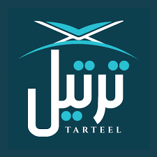

ABOUT TARTEEL

Have you ever wished you had someone to listen to and correct your recitation or Tajweed?
If yes, this is the perfect app for you.
Have you ever wanted to increase your knowledge of the Quran by teaching and helping others to improve their understanding of the Holy Book?
If yes, this is the perfect app for you.
This app connects both listener and reciter in their free time to help each other.
So, you can rest assured that your well spent time will be your wealth here and in the heareafter.
The institute has the mission of serving the Glorious Quran within the Australian Muslim Community in distinctive and quality approach through the following:Enabling the generations to inherit the Science of recitation based on the Sanad (the chain ofQuranic recitation) back up to the prophet Muhammad peace and blessings are upon him.Educating the learners to follow the moral values of Great Quran.
 Being proud of all those who work with the institute, caring about them and ensuring a relationship of intimacy and cooperation with the learners and memorisers at the institute. This will be based on the Islamic values of tolerance and the munificent leafy shadows of the Quran.Following methodical systematic program.Employing advanced technical and educational methods.Implementing the work in a planned and coordinated approach using modern management principles.
Being proud of all those who work with the institute, caring about them and ensuring a relationship of intimacy and cooperation with the learners and memorisers at the institute. This will be based on the Islamic values of tolerance and the munificent leafy shadows of the Quran.Following methodical systematic program.Employing advanced technical and educational methods.Implementing the work in a planned and coordinated approach using modern management principles.